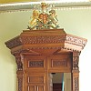

Moussieu l'Editeu
I' s'arrivit une drôle dé chose siez-nous hiér-matin. Quand j'rentris dans les onze heuthes pour une tâsse de café, comme de couôtume, j'trouvis la Merrienne, pale comme une chique, assise dans sa grandtchaise. Oulle avait l'air d'une personne tch'est prête à s'èvani.
'Oh Ph'lip' ou s'fit quand ou m'aperchut 'que j'si contente de t'vaie. Tchiquechose s'est arrivé tchi m'a fait si peux que man pouôre tchoeu gallop à j'n'sais pas combain d'milles par minute. Donne-mé, j't'en prie, deus d'gouts d'cognac pour mé ravigotter.'
Quand ou s'trouvit mus ou m'dit qu'en entrant dans la tchuisine après aver soigni la volaille, oulle avait aperchu un gros mêsle jutchi sus l'dos d'une tchaise. La f'nêtre étant ouverte, il avait entré dans s'n absence.
'Quant i'm'vit i'fichit san camp, mais Ph'lip tu sais bein tchèsque chenna veur dithe. Ch'est une mort dans la maison dans l'couothant d'l'année et j'n'sommes que té et mé.'
'N'oublie pas la catte' j'li dis. 'J'ai r'mertchi derniéthement qu'oulle avait pouôre mine.' Et j'm'en r'fus d'hors. Mais, Moussieu, bétôt j'mé mint à y penser et j'mé r'souvint d'une grand'tante tchi m'avait raconté la même histouaithe. Mais ou d'meuthait toute seule et oulle avait nonante-chinq ans quand ou crévit, ch'est pourtchi j'm'en vais pas m'gêner. Avec chenna, si j'vais iun d'ches maufaits ouaisieaux aupi d'la maison iun d'ches jours, i'pouôrrait attraper un trait-d'arme à travers la tête. Ch'n'est pas la peine d'prendre des risques!

Quant vint l'sé, la bouonnefemme se mint à lièthe la gâzette, et, ayant fini, ou m'dit comme chenna: 'J'n'sais pas, Ph'lip, mais i' m'semblye qué la 'Post' n'aime pas trop lé Juge dé la P'tite Cour. Ou li dit, à sêsé, qué s'i'n'peut pas faithe mûs, il est temps tchi donne sa djobbe à un autre. J'n'sais tchèsque lé Sieur Vouasin ditha d'chenna.'
'I'n'ditha rein et né f'tha rein' j'li dis. 'Il a une raide bouonne djobbe et i'n'sé géne pas dé chein tch'est êcrit dans la 'Post' ou dé chin qu'les gens disent dé li. Touos les Vouaisins sont d'même - ch'est dans lûs natuthe.
'Dans man temps' j'continuis, 'y'a yeu trais ou quatre Juges à la P'tite Cour. I'y'avait lé Juge Vaudin et l'Juge Piné, sans pâsler du Juge Dorey et p't-être un autre pour un p'tit d'temps. Lé Juge Vaudin 'tait un drôle de caractèthe. J'mé r'souvains d'une bordée quant un chent'nyi d'Campagne avait présenté un homme et sa femme pour aver intérrompu la paix publique. Le Chent'nyi dit au Juge tch'il avait 'té app'lé à la maison. Et qu'la femme s'était pliainte qué s'n homme li avait donné un co-d'poing dans l'visage. Le pouôrre balloque, tch'avait un lopin gros comme un oeu d'pithot sûs l'haut d'la tête, dit au Juge qué sa femme l'avait capuchi avec une castrôle pour un rein. Ch'tait vrai tch'i' y'avait fliantchi une cliamuse, mais i'criyait qu'ou la méthitait. Moussieu Vaudin déchargit la femme et enviyit s'n homme en prison pour un mais, disant qu'un homme né dév'thait pas en autchune circonstances même frapper sa femme. J'ai tréjous 'tait seux que si ch'avait 'té 'Johnny' Pinel l'homme éthait 'té mint en liberté et la femme en éthait yeu pour un mais d'prison. Lé Juge Vouaisin, sans doute, éthait dit au couplye dé s'en r'aller siez-yeux et d'lûs comporter un mio mûs à l'av'nin. Tu peux vaie àch'teu qué chaque Magistrat interprète la louai à sa faichon.'
'Ach'teu, pour chutte visite à Granville' ou s'fit. 'Grand doux d'la vie par lé rapport et les photographies dans la 'Post' nou craithait qué Granville est un vrai palais.'
'Ch'là s'peut' j'li dis, 'mais nous allait là dans man jeune temps, Granville était morte et sale comme tout. Nou n'y restait pas après aver mangi une bouochie dans un café tchin'avait pas 'té netti pour des s'maines, épis nou prenait l'train pour Avranches. De là nous allait au Mont Saint Michel, en route pout Saint Mâlo. Si Granville est l'paradis qué la 'Post' voudrait nos faithe craithe, y'a yeu dé grands changements dépis ches jours-là.'
'I'pathaissaient aimer hardi notre Bailli' ou s'fit, 'et l'Sénateur Krichefski étout.'
'Damme vethe' j'li dis, 'et pourtant y'a bein d'a années ch'n'tait pas des saluts mais des grimaches que les gens vos faisaient là. Tchèsqu'tu'en dis, Merrienne, j'ithons-t'i' pâsser un tchinze jours lé pour un change?'
'Vas-y s'tu veur' ou raiponnit, 'mais quant à mé j'n'ai jamais aimer les Francais d'pis la bordée, y'a bein d's années quand j'fûmes à Saint Ou, et qu'tu r'vint à l'hotel à quatre heuthes du matin, explitchant qué tu'avais perdu tan c'min, et qu'un Chentnyi, un Surveillant et trais Officiérs du Connétablye avaient fait la même chose. J'n'ai jamais 'tait en France dépis, et j'n'm'y'en vais pas àch'teu.'
I' tait grand temps dé changi d'sujet, Moussieu, et j'mé mint a pâsler d'chu pouôre Chentnyi d'la Ville lé Sieur L'Cronier, tch'avait 'té assàssiné y'a pûs d'chent ans quand i'tait en train d'arrêter une Francaise et s'n homme tchi gardaient iun de ches maisons dé tchi des gens respectablyes ne pâslent pas. 'Dans ches jours-la' je m'fis 'y'en avait dans touos les quartiers d'la Ville.'
'Oh!' ou dit, 'j'comprends àch'teu pourtchi qu'la femme avait onze filles. J'criyais qué ch'tait hardi mais j'vais bein tchi sorte dé commerce i' m'n'aient. Chein qu'je n'comprends pas, Ph'lip, ch'est pourtchi qu'chutte femme-là ne fut pas pendue.'
'J'ai tréjous creu' j'li dis, ' qué y'avait pûs d'un membre du jury tchi n'ôsait pas la condamner, dé peux dé chein qu'oulle éthait peut dithe.'
'Ch'est pûs qu'probablye' ou dit 'mais y'a une chose, Ph'lip, i'faut être bein contents qué les gens sont pûs civilisés àch'teu et qué d'patheilles maisons n'existent pas. Heutheusement tout a changi.'
'Nouffé, Merrienne,' j'li dis, 'y'a une chose tchi n'a pas changi.'
'Et tchèsque ch'est?'
'La natuthe humaine, ma vielle' j'li dis.
PH'LIP
11/6/1960
Viyiz étout: